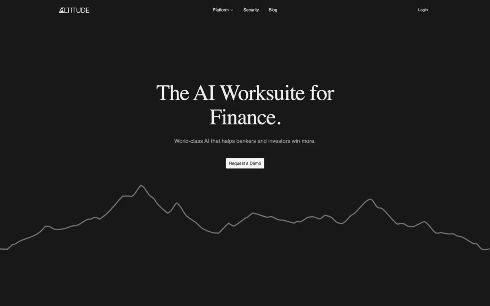

Altitude 的 Design.md 主题展示，围绕Web3、暗色界面、金融科技、AI组织页面。
Explore Altitude's dark Fintech design system: Deep Charcoal #181818, Graphite #262626 colors, Libre Baskerville, Inter typography, and DESIGN.md for AI agents.

#181818: #181818#262626: #262626#eeeeee: #eeeeee#ffffff: #ffffff#e4e4e4: #e4e4e4#323232: #323232#1f1f1f: #1f1f1f#e7e5e4: #e7e5e4#111111: #111111#5e5d59: #5e5d59#a4a19b: #a4a19b#585858: #585858display: Interbody: Intermono: ui-monospacehints: Inter,ui-monospace